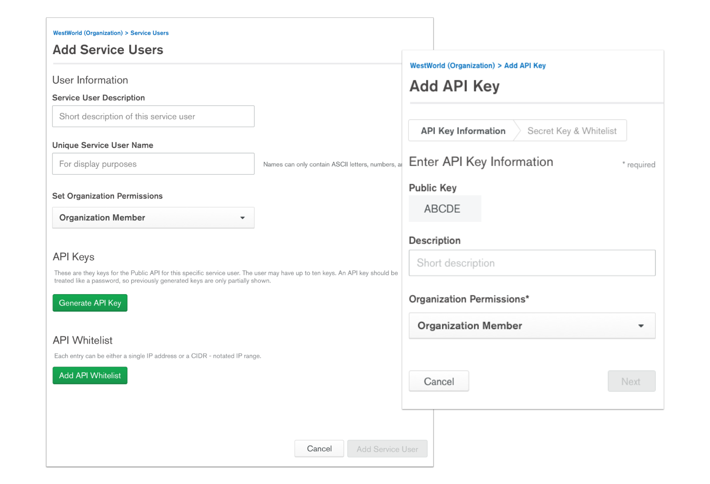

At MongoDB I am currently supporting 3 engineering subteams under the Cloud team. Core, Monitoring (see our Free Monitoring project launch), and Ops Manager. I've worked on a wide variety and multiple big and small projects. Here are some of the more recent ones from each team.
I had previously interned at MongoDB in the summer of 2016. From looking at my intern project from the archives, I'm proud of how far I've come.
This was a very big project so I’ve only included a portion of what went on below. Please feel free to contact me for further walkthrough or information regarding this project.
In order to be more competitive in the database landscape as well as plan for future projects on the roadmap, MongoDB wanted to introduce the feature of API Keys to our Cloud system.
API Keys in this case refers to a set of one or more keys the admin of each organization can generate then give to his or her team members. Each key can have its own permissions and can also be logged so the admin can see how each keys used. Note: when this project was started, we originally all called it ‘Service Users’ so some early screenshots will show different naming - more of that to come.
Before I dive into any project, I usually will start with understanding what is our current ecosystem (in terms of current technical restraints, design system constraints), who are our competitors and how have they tackled a similar problem, and what are the expectations of our stakeholders. In this project, I worked closely with the PM and the engineers (the lead of the team as well as the engineer directly tasked on writing the specs).
Here I brainstormed and outlined all the features we would need to include. I walked through the proposed feature list with the PM and the user flow with the engineer to make sure we were all on the same page.

In preparation of the project and to make sure everyone is aligned, at the start of a project, I wrote out a Product Design Document. This document, similar to when a Product Manager writes out a scope or an engineer with a spec, outlines the expectations from a design perspective as well as catalogs the progress and iterations of this project along the way. This creates more transparency between the me and the rest of the team. I also included all the User Research I did, analyzing how other competitors have tackled this same problem.
When starting to brainstorm the designs and working on early ideation, I focused on three features 1) How to display and list out the Service Users, 2) How to add new Service Users 3) How to edit Service Users. Here was the first and last iterations on the add/edit form. There were many changes from breaking up the form into a two step process to changing the scope entirely so we would just auto-generate a Public Key (formally called Unique Service User Name) for you.
Since this project was dubbed ’Service Users’ in the beginning, when I started working on the designs, I had the idea this would some how roll under our regular user list - easy peasy, right? However with closer investigation, I realized 1) the way users are displayed on the organization level vs the project level was totally different! 2) if we just appended our service users right under, it wasn’t super accessible or scalable 3) the naming conventions that made sense to us internally, seemed more and more confusing as I was trying to display it in an user friendly manner.

User testing is always my favorite part of the process since it puts everything in perspective and helps me understand what users are really seeing and feeling. For the first round of testing, I A/B tested the tab versus list format of displaying Service Users and quickly validated my hypothesis - the tab format was unanimously chosen over the list. Users explained its as easier to navigate and to see everything without scrolling.

Something that also caused a lot of confusion was the name Console Users vs Service Users. All of us on the project (stakeholders, engineers, etc.) were all referring to the original users as Console Users while the new list as Service Users; however, no one I was testing on understood what was what these terms were at first glance. When they did click on it and saw the list or empty states, they could guess based on context but that was not what we were going for - we wanted these concepts to be understood intuitively.

During this whole process I collected all user feedback on my Product Design Document (above). It helped me provide transparency to my team and stakeholders and allowed me to keep track all the changes I did. Through multiple rounds of iterations and user testing, some other aspects of the design that changed include the sidebar navigation along with the naming convention itself.

After much debating, much testing, and many long meetings where we switched the copy and the entire IA of users/teams back and forth, we ended up putting everything under a new navigation category called ‘Access’ this included users, teams as well as the newly dubbed ‘API Keys.’ This felt more cohesive as these three things are were related to the level of access and permissions one could have within the organization or project. Also, we knew coming down the roadmap we had permission related projects that could also live under this newly created sections.
Copy ended up being a huge source of discussion with this project. Stakeholders had one idea, engineers had one idea, and I had backing from user testing and research that said another. We went through multiple rounds of this and ended up finally with the most intuitive - API Keys and Users.
Here is a quick gif preview of the final designs. As you see the tab and naming has been consolidated as well as a clearer flow when creating a new API Key:

Because I learned copy was so important to stakeholders, I actually helped introduced a ‘Copy Document’ for future design processes. This was a document where designers bring to light all the screens that contain copy which needed to be reviewed. This allowed copy not being a blocker on design sign off which was great since this mean engineers could start on the the work as soon as possible and tweak the copy (easy changes) later. This also, allowed the focus when reviewing to be on the actual user experience and UI designs instead.
What I’ve also learned from this project was to make sure the stakeholders were all aligned constantly. Because this was such a huge project with many different stakeholder groups, I ended up actually meeting with few key stakeholders separately. For example, I would have more frequent alignment meetings with my engineering team so at least we were on the same page before we went to the higher ups since this project required signed off from the SVP of Engineering. If the whole team presented a more unified front, this allowed our major stakeholders to feel more confident in the proposed decisions as well.
Finally, it was important not only have a good process down but to provide others the transparency to your process. This project was originally planned (at least for design) to take only ~2-3 weeks. But because of the multiple back and forth with how we wanted to structure the IA, how the copy should be, etc. it took closer to a month. Ultimately, the extended time for design and for solidifying these details wasn’t a problem because all the stakeholders knew exactly what was going on and why it was taking longer than planned.
For future steps, I would like to evaluate if the introduction of this feature actually helped MongoDB become more competitive the market and determine how much this feature is used. This can be through data gathered over time on how many times users actually utilize this feature and whether they find value in it. Since this feature was only recently launched as of this post, I do not have these answers… yet!